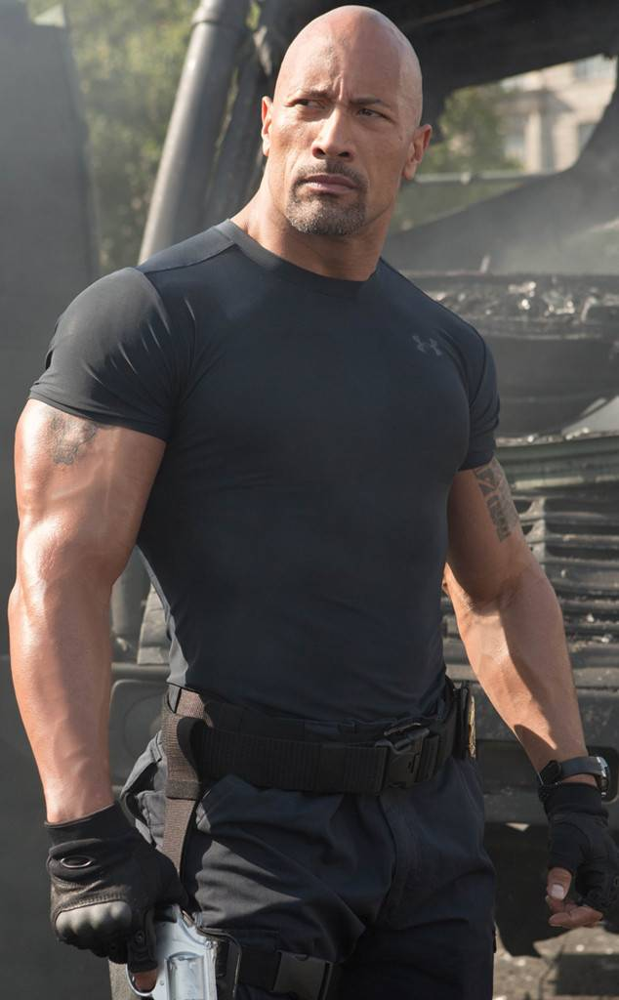
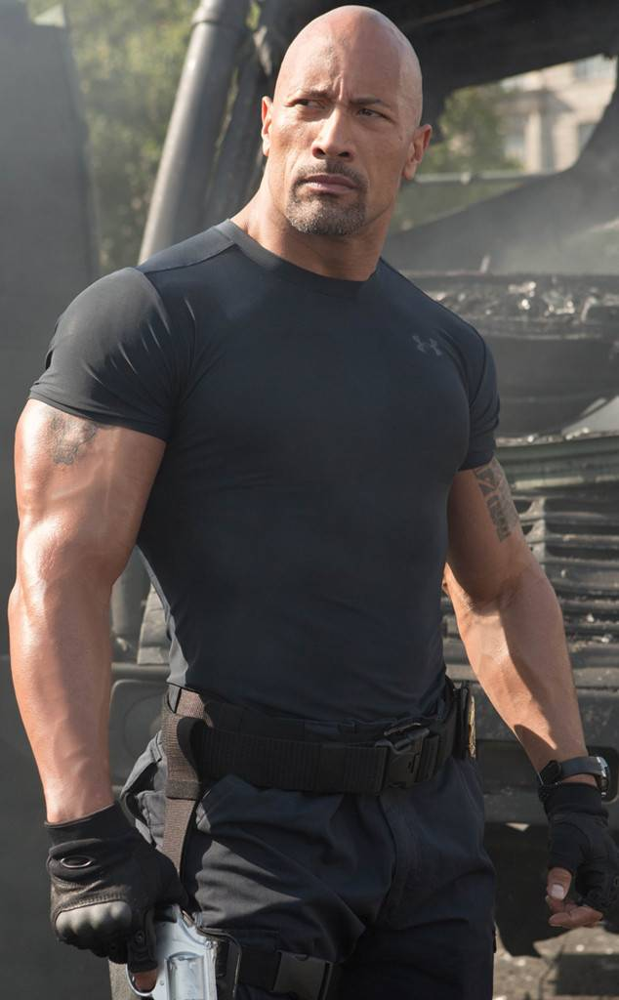

吳宗憲（英語：Jacky Wu，1962年9月26日－），出生於臺灣台南市西區，台灣知名男藝人、綜藝節目主持人、歌手、演員、唱片製作人、商人。因參與《五燈獎》賽事而在演藝界嶄露頭角，1987年正式以歌手身分出道，早年有「星馬王子」之美譽。1990年代開始進軍綜藝節目，吳宗憲憑藉獨樹一格且詼諧逗趣的主持風格迅速竄紅，成為台灣乃至華人世界最知名的主持人之一。自2000年起多次高居臺灣主持人收入榜首，穩坐綜藝天王地位，在臺灣電視綜藝界與張菲、胡瓜和張小燕合稱為「三王一后」，有「本土天王」、「綜藝天王」、「Local King」之稱號，為當中唯一跨域稱霸「金鐘獎」與「金曲獎」雙料大獎，亦為當中唯一自多年前便開始進軍中國大陸市場、綜藝娛樂事業版圖成功橫跨兩岸，以及率先進軍新媒體產業者。
2008年，吳宗憲和柳翰雅以《我猜我猜我猜猜猜》獲得第43屆金鐘獎「娛樂綜藝節目主持人獎」。2016年，吳宗憲與吳姍儒父女檔以《小明星大跟班》節目獲得第51屆金鐘獎「綜藝節目主持人獎」。2017年與2018年，吳宗憲與KID以《綜藝玩很大》連續獲得第52屆金鐘獎和第53屆金鐘獎「益智及實境節目主持人獎。吳宗憲創下台灣電視史第一對父女檔共同榮獲金鐘，以及個人連三年奪得金鐘獎主持人獎項之紀錄。
歌唱事業上，吳宗憲曾獲金曲獎第3屆「最佳國語男演唱人獎」提名及第6屆、第10屆「最佳方言男演唱人獎」提名，並於1994年以專輯《真心換絕情》獲得第6屆金曲獎「最佳方言歌曲男演唱人獎」。再加上2013年於第24屆金曲獎《Music I Remember》段落，個人獨唱經典金曲串燒組曲，大受好評（該段落為第24屆金曲獎最高收視），其歌唱實力仍不容小覷。2018年，吳宗憲舉辦睽違多年的個人演唱會，門票熱賣。吳宗憲為2000年、2001年、2002年、2003年、2005年、2006年、2007年、2009年、2012年、2013年、2015年、2017年臺灣主持人收入榜首。
她的女兒:吳姍儒
吳姍儒（英文名：Sandy Wu，1990年8月15日－），臺灣女藝人、主持人、英語教師，畢業於美國華盛頓大學巴薩爾分校（University of Washington Bothell, UW Bothell），為台灣綜藝主持人吳宗憲長女，亦為吳宗憲所成立的經紀公司「容易文創」旗下藝人。2016年，吳宗憲與吳姍儒父女檔以《小明星大跟班》節目獲得第51屆金鐘獎「綜藝節目主持人獎」，吳姍儒成為台灣電視史上最年輕的金鐘綜藝主持人。
 
